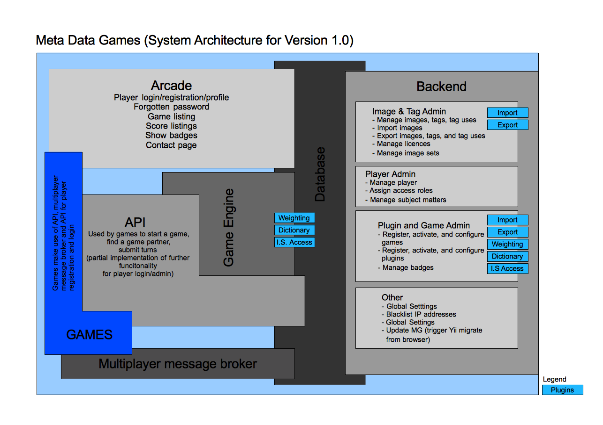

Last modified: 03/02/2012
In the following we'll briefly explain the concepts and technology that has been used to implement Metadata Games (MG). Please also refer to the terminology document for clarification of a few key terms.
MG has been written in PHP with help of of the Yii framework. As database we have choosen mySQL.
Yii is an model view control (MVC) framework and we kept for server site implementation strictly to that pattern.
We suggest that you familiarize yourself by browsing through the The Definitive Guide to Yii.
Make sure to know about the following key concepts of Yii before you go on with any deleopment for MG.
Please consult the following image for a overvie of the system architecture of MG.

In the following we will briefly list how each of the sections has been implemented.
Arcade
The arcade is implemented with controller, views, and several CPortlet widgets. It also makes use of the user module. The arcade and the widgets have been themed using Yii's theming methods.
The code for the plugins can be found in /www/protected/controller, /www/protected/components, /www/protected/models, /www/protected/views, /www/themes
API
The API has been implemented as a module. Making use of several helper compontents.
The code for the plugins can be found in /www/protected/modules/api
Games & Game Engines
Games are implemented as compontents and controller within the games module. Each game provides own assets but also uses the JavaScript API implementation provided by MG. A game is consuming the API and will make use of weighting and dictionary plugins. All games makee use of several helper compontents.
The code for the plugins can be found in /www/protected/modules/games and /www/js
Multiplayer Message Broker
Has been developped as a callback function in the API.
Plugins
MG has got a plugin architecture that has been implemented as module. At the moment five plugin categories are implemented as submodule of the plugins module:
Dictionary
Used by games to provide word lists (e.g. stop words, words to avoid) and to influence tag use weighting.
Weighting & Scoring
Used by games to weight tag uses and score game results.
Import
Can be used to implement further functionality on image import. E.g assign images to image sets.
Export
Used to provide additional functionality on export. E.g. embed tags into the images' XMP headers.
Image Set Access (Not used in version 1.0)
Restrict access to image set based on certain creteria.
The code for the plugins can be found in /www/protected/modules/plugins
Database
MG makes use of a MySQL as database. Yii, however, supports other databases the only potential constraint for using a different database management system is the install routine that uses a prefabricated SQL file to create all needed tables and their entries.
Backend
The backend has been implemented as a module. Making use of several helper compontents. Most of the admin tools have been initially generated with Gii (making use of custom templates) and then customized them further to meet the particular admin tools need.
The backend is basically a collection of admin tools implemented in the module but also provides access to admin tools provided by other modules (e.g. the plugin setting or user administration)
All admin tools are access restricted to be shown only to players of certain roles.
The code for the admin tool can be found in /www/protected/modules/admin
MG has been created to support the creation of games that help to create new keyword information (tags) for a large amount of images. As those games and their gameplay are unforeseen the system has to be very flexible. We'll describe in the following the how games can be implemented in MG.
First of all it is worth to mention MG supports the following types of games:
Single Player
Two Player
Wherby two player games can be implemented to work in two modes:
Human vs. Human
Human vs. Computer
In case a second player is not available for a requested game or a player does not want to play against another player, MG will try to simulate a human response based on existing information about the game, image sets, images, and tags.
Games are implemented as part of the games module (/www/protected/modules/games/). Each game is consists of a component, a controller, and an folder containing all needed assets. Before we describe these element in detail it is worth to mention that the games implementation is split in two parts. One part will be rendered by the game's controller and served to the player to be executed in the users browser/client the other the game engine via the API on the server.
The browser side has the following tasks.
The game logic will be implemented as a JavaScript file an consume the API via AJAX calls. The responses of the API will be in JSON and parsed by the game logic to render turns or continue the game play.
To ensure validity and security a game can only manipulate data in the database via the API.
The game engine is implemented as a component whichs predefined methods will be called by the API at certain states. At each of these states the game implementation can make use of the current games data, submission, states to process the data, create new turns, or save data to the database.
To create a new game you'll have to implement a "game" package that fulfils the following tasks:
Once you have created a game and copied all needed files to the appropriate folder on you MG install you'll have to visit the game admin tool in order to register the game as available in the system
Open Game in Browser
This will call the game's controller which will render the needed HTML and makes sure all needed CSS & JavaScript will be loaded.
Initialize Game
Once the page is loaded the JavaScript game logic (JGL) will make use of the API HTTP GET) to call the initial game data. This may need several attempts as the user may have to wait for a second player.
Render Turn
Once the API returns the initial turn the JGL will render the needed HTML to allow the player to start the game.
Submit Turn
The player finishs a turn by fullfilling certain criteria. The game logic will then sends (HTTP POST) the turn to the API. This evaluates the submission by making use of by an instatiation of the game's server side game engine.
If the submission is valid the API will interact with the game engine to weight the tags from the submission, score the result, save the submission and tags and/or tag uses to the database and generated a new turn (if the game is not already over. The results and the new turn will be JSON encoded and send back to the client.
Parse Result
The game logic will then parse the result and update the state of the client. This can involve task as rendering of the next turn, showing the last turn's score, or showing a final screen if the game reaches the end.
As already said each game is a collection of a component, a controller, and at least a JavaScript file for the client side game logic implementation. We'll discuss these here now briefly.
Controller
The controller's task is just to server the inital HTML needed to render the game. You should include all needed JavaScript and CSS. A new controller has to be place in /www/protected/modules/games/controller and name GIDController.php (e.g ZenTagController.php)
Within the HTML you should initialize the game logic and trigger it's init function.
An example is the ZenTag controller which you can find here: /www/protected/modules/games/controllers/ZenTagController.php
JavaScript Game Logic
Each game logic is an extension of the MG GAME API which is an extension of the MG API implementation. Both files reside in /www/js/. By extending these files you gain access to shared functionality and an simple interface to consume the API. As its complexity is hidden behind simple method calls.
The init call triggered via the HTML created by the controller cascades downward through the classes initialize all and then upward via success callbacks to start the game.
An example of the implementation for the JavaScript based game logic is ZenTags that is in the following file /www/protected/modules/games/assets/zentag/js/mg.game.zentag.js
If you're implementing two player games you'll have to make use of the message provided by the API to pass important changes on to the other player as we're working with clients in distributed networks that (yet) cannot talk to each other in real time. Both clients have to poll this queue in short intervals to retrieve and act on these messages.
An exemplary implementation can be found in ZenPond's game logic file /www/protected/modules/games/assets/zenpond/js/mg.game.zenpond.js
Location: /www/protected/modules/games/assets/(game id in lowercase)/
Game Engine
Each game engine is a component that should be placed in /www/protected/modules/games/component. It should be a class and file name GIDGame(.php) (e.g ZenTagGame.php). The class has to extend MGGame and implement MGGameInterface. To ensure all expected methods are present and implemented.
While the methods inherited from MGGame might be only be partially be overwritten by own code. You'll have to implement the following methods as they will differ which each games implementation:
parseSubmission(...)
As the JSON submitted/posted by the JavaScript implementation of the game can vary each game has to implement a parsing function to make it available for the further methods. This is also the right place to sanity check the submission received by the server
parseTags(...)
Take the information from the submission and extract the tags for each image involved in the current turn.
setWeights(...)
Allows to implement weighting of the submitted tags. Here you should usually provide hooks to the setWeight methods of the dictionary and weighting plugins.
getTurn(...)
Creates the needed data for a turn. This data will be passed on to the players client and there rendered. It will most likely involve the follwoing tasks.
getScore(...)
This method should hold the implementation that allows the scoring of the turn's submitted tags. It is the place to call the weighting plugin's 'scoring' methods.
Use jquery templates for the html of you clients. This makes the future customization of your games much easier.
Don't forget you can extend the functionality of the API for a game by implementing a custom callback using the API's game api callback.
Have a look in the code there is many comments will help you to reveal further functionality
Please give the assets folder in the modules assets folder the name of the gameid in lowercase
Please refer to the API documentation for more information on the current API's functionality and used security concepts implemented as filter.
You can consume the API via AJAX JavaScript requests and it will repsond with data in form of JSON encoded strings.
The API is implemented as a module which you can find in the /www/protected/modules/api folder. Here you can see that the API is actually no more than controller that extend an ApiController class to inherit base methods and filter. To add new functionality to the API you have either to implement new methods in the existing controller or add a new controller.
At the moment the API's:
For all API controller you want to make sure to keep using appropriate filter such as throttle, IPBlock, APIAjaxOnly, accessControl, and sharedSecret.
To allow two player games we implemented a server side message queue with wich help the game logic and API can leave messages for the two clients to trigger events on the remote machines.
We recommend to make use of the JavaScript implementation of the API to consume the API on client/browser side.
To make it easier to extend certain functionalities of MG we have made use of a plugin architecture. At the moment the system make use of four categories of plugins. Which use and particular callbacks we will describe further down.
To begin with we want to explain how to implement a plugin. Each plugin will is implemented as part of sub-modules of the plugins module extending components and models of the parent plugins module. If you have a look at the component and models folder in /www/protected/modules/plugins folder you'll find the base classes that you'll have to use.
A plugin consists of at least a component that you'll have to place in one of the sub modules component folder representing the plugin category. You can finde these here: /www/protected/modules/plugins/modules.
To ensure that each plugin of a category has all the callback methods of its category you'll have to extend the plugin's category componentent from the parent module. In your plugin you can overwrite all the inherited methods to suit your needs.
Please make sure that the newly created component's class and filename end in Plugin (e.g StopWordPlugin and StopWordPlugin.php)
Once you've copied the files to the appropriate folders on your MG install visit the plugin admin tool. Each time you visit the overview screen the system scans the plugin folder and attempts to register/deregister plugins in the systems database.
If a plugin does not need any further settings you're good with just creating a component. To to store settings for a plugin you'll have to implement a model and a controller and place the code in the same sub-module folder.
All plugins share the same model which main task is to allow to save settings in the database and settings file. Please make sure to extend your plugins model with MGPluginModel and to implement the MGPluginModelInterface.
The controller can either be only consist of a sub
There a few attributes you can set in the component to influence how MG is rendering the admin interfaces:
enableOnInstall
Set true to allow the plugin system to auto activate the plugin on registration.
Defaults to: FALSE;
hasAdmin
Set true if the plug-in has got an admin tool implemented by providing a controller.
Defaults to: FALSE;
adminPath
If the admin tools path is not the default location please specify it here. User absolute or relative paths.
Beware you might have to specify /index.php/ as part of your path if you use Yii routing
Defaults to: "";
accessRole
The minimum role needed in order to access the plug-ins admin tools
Defaults to: "editor";
As already described there are currently four plugin categories in use. Each of them serves a different purpose and might ask you to implement different methods that will be called throughout the system.
Note: Please notice that most of the methods are empty stubs and that you'll have on to implement the methods that suit your particular need
However some methods are share among all of them as all extend the same base class MGPlugin.
install()
Called on installation/registration of the plugin
uninstall()
Called if you delete a plugin in the plugin admin tool.
addScore(...)
This function adds a value to the score of a tag. If the key "score" is not set it will set it.
adjustWeight(...)
This function adds or substracts a value from the weight of a tag. If If the key "weight" is not set it will set it. Used by dictionary and weighting plugins.
Used by games to provide word lists (e.g. stop words, words to avoid) and to influence tag use weighting.
parseSubmission(...)
This handler allows dictionary plugins to contribute to the game submissions parsing
lookup(...)
This is a callup that will allow you to check wether a list of tags are listed in the dictionary
setWeights(...)
With help of this method you can influence the weight of tag submitted by the players. The weightened tags will be used for scoring and saved as tag uses into the database
wordsToAvoid(...)
With help of this method you can add further elements to the words to avoid array returned the player in the turn's data.
add(...)
This function allows to add a tag to the dictionary. The $info provided can help a plugin to filter add requests.
Used to provide additional functionality on export. E.g. embed tags into the images' XMP headers.
form(...)
With help of this method you can add additional fields into the form. At a minimum you'll have to add a field that allows the user to activate the plugin for the current export.
preprocess(...)
This method will be called at the moment the temporary folder has been created. You could prepare files and folders needed for the processing of the images.
process(...)
This method will be called once for each image to be exported.
postprocess(...)
This method will be called after all images have been exported.
Can be used to implement further functionality on image import. E.g assign images to image sets.
form(...)
Provides the ability to add additional fields to the form. Before it will be shown to the user.
validate(...)
Callback handler for validation of the form fields added by the form method.
process(...)
Callback handler that allows the plugin to process/manipulate the imported images.
Used by games to weight tag uses and score game results.
This function adds a value to the score of a tag. If the key "score" is not set it will set it.
score(...)
The method will be called to generate the score for one turn. Several weighting plugins can be called to built up a compound score.
setWeights(...)
The method called by games to reweight any passed tags.
parseSubmission(...)
This handler allows weighting plugins to contribute to the game submissions parsing
addScore(...)
Helper Method: This function adds a value to the score of a tag. If the key "score" is not set it will set it
We'd like to highlight the MGTags class that streamlines the use of tags and the retrieval of tags of images in the system. You can find it in /www/protected/components and encurage strongly to make use of this class.
The security and validity of user profile data and user submissions is highly important. To ensure this MG is using the following security mechanism:
To prevent a user from gaming or overloading the system, we restrict each
user to a certain number of submissions in a certain amount of time,
e.g., only one submission per 10 seconds. This is enforced via the 'throttle'
action. The interval can be configured on the Global Settings page.
To deal with repeat offenders or malicious groups of users from a given IP range, we implemented a global black list of IP addresses. You can maintain this list via the admin tools.
You can block/deactivate player accounts
You have interfaces to set the tag use weight of a user or a tag to 0.
You have the ability to fine tune a players tag uses or ban the player alltogether. The system will automatically set all tag uses to 0.
Each registered player is identified by a unique id.
The API makes use of a session bound shared secret to make double submission from different client more difficult.
All user-submitted data is validated and sanitized on the server side before being added to the database to avert SQL injection and such like.
All user-submitted data will be sanitized before output to avoid wrong doing like XSS (cross site scripting).
To prevent misuse by anonymous users, each anonymous user is tracked in terms of time, IP address, and other session data in order to prevent misuse. The system is able to distinguish between contributions of different anonymous users.
To allow further development and update cycles we have made sure that configuration items and user data are clearly separated. All configuration items are stored in the file /www/protected/data/fbvsettings.php which can be and is manipulated via the FBVStorage component.
MG makes use of Yii's built in user authentication framework. Which is configured to use the database with help of the CDbAuthManager as storage place for the user authentication items. At the moment MG uses for roles that Player, Editor, DB-Admin, Admin that are enforced throughout the sytem with inline code in the view generating the menu items and as filter for actions.
One ideosyncracy of the current MG version is that the roles giving access to the admin tools are configured in the settings file that is located in /www/protected/data/fbvsettings.php. For an overview over the role admin tool mapping please consult the document describing Roles in MG.
We have written several templates to for Gii to generate modules, models, controller, or views. We encourage you to use gii and giix shipped with this install to develop further admin tools or other backend sections.
We recommend to use . Please use the mg templates while creating models or CRUD code. If you generate CRUD code you can choose between two templates one for tables using created, modified columns and one for other models. Please generate all models representing actual database tables in the applications models (/protected/models/) folder this ensures easy reuse of these models.
To allow further development and update cycles we have made sure that configuration items and user data are clearly separated. See "File Base Configuration Items" above and also allowed the usage of Yii Migrate. You can trigger the migration process from the terminal or via an admin tool if you are logged in as an administrator.
We have a few more suggestions for further development: